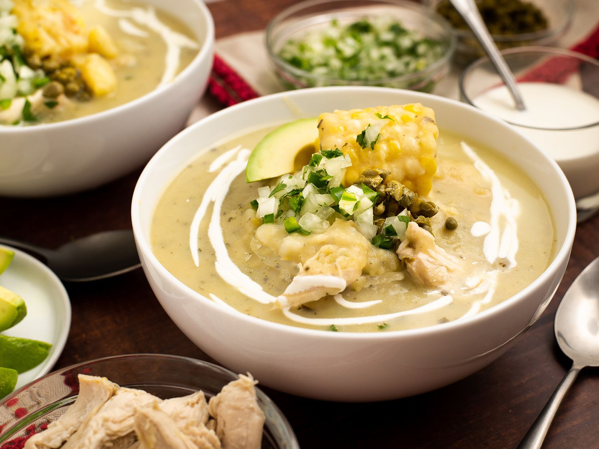

Index
Ajiaco

Description
The ajiaco is a traditional colombian soup
is mainly made out of potatoes and chicken
it also contains corn and is seasoned with
a traditional herb called "Guascas".
Ingredients
- 1kg potatoes
- 50g guascas
- 200gr chicken breast
- 1lt water
- salt
- 2 corn cobs
- In a large pot, place the chicken, corn, chicken bouillon, cilantro,
scallions, garlic, salt and pepper. Add the water and bring
to a boil, then reduce heat to medium and cook for about
30 to 35 minutes, until chicken is cooked and tender.
Remove the chicken and set aside.
- Continue cooking the corn for about 15 more minutes. Discard green onion
and add red potatoes, white potatoes, and the guascas. Cook for 15
more minutes.
- Uncover and add the frozen papa criolla and simmer for 15 minutes, season with
salt and pepper.
- Cut the chicken meat into small pieces and return to the pot. Serve the Ajiaco
hot with capers and heavy cream on the side.